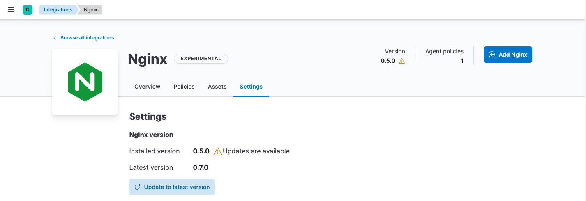

Integrationsedit
Elastic integrations provide a simple, unified way to:
- Add monitoring for logs, metrics, and other types of data to your hosts
- Protect systems from security threats
Each integration comes pre-packaged with assets that support all of your Observability needs:
- Data ingestion, storage, and transformation rules
- Configuration options
- Pre-built, custom dashboards and visualizations
- Documentation
Integrations are available for a wide array of popular services and platforms. To see the full list of available integrations, go to Management > Integrations in Kibana, or visit Elastic Integrations.
The following table shows the main actions you can perform in the Integrations app in Kibana. You can perform some of these actions from other places in Kibana, too.
| User action | Result |
|---|---|
Configure an integration for a specific use case and add it to an Elastic Agent policy. |
|
View the integration policies created for a specific integration. |
|
Change settings or delete the integration policy. |
|
View the Kibana assets installed for a specific integration. |
|
Update an integration to the latest version. |
|
Remove an integration and its assets from Kibana. |
Add an integration to a policyedit
Policies consist of one or more integrations. To add a new integration to a policy:
- In Kibana, go to Management > Integrations. Search for and select an integration.
- Click Add <Integration>.
- Name the integration, and add any required configuration variables.
- Choose the policy you want to add the integration to. You can choose an existing policy or create a new one.
- Click Save integration to save the integration policy as a part of the larger Elastic Agent policy. Fleet will distribute this new policy to all Elastic Agents that are enrolled with it.
If you haven’t deployed any Elastic Agents yet or set up agent policies, start with one of our quick start guides:
View integration policiesedit
An integration policy is created when you add an integration to an Elastic Agent policy.
To view details about all the integration policies for a specific integration:
- In Kibana, go to Management > Integrations > Manage. Search for and select the integration you want to view.
- Click the Policies tab to see the list of integration policies.
Open the Actions menu to see other actions you can perform from this view.
Edit or delete an integration policyedit
To edit or delete an integration policy:
- In Kibana, go to Management > Integrations > Manage. Search for and select the integration.
- Click the Policies tab to see the list of integration policies.
-
Scroll to a specific integration policy. Open the Actions menu and select Edit integration or Delete integration.
Editing or deleting an integration is permanent and cannot be undone. If you make a mistake, you can always re-configure or re-add an integration.
Any saved changes are immediately distributed and applied to all Elastic Agents enrolled in the given policy.
View integration assetsedit
Integrations come with a number of assets, such as dashboards, saved searches, and visualizations for analyzing data.
To view integration assets:
- In Kibana, go to Management > Integrations > Manage. Search for and select the integration you want to view.
- Click the Assets tab to see a list of assets.
If Elastic Agent is already streaming data to Elasticsearch, you can follow the links to view the assets in Kibana.
Update an integrationedit
An internet connection is required for Kibana to download integration
packages from the Elastic Package Registry. Make sure the Kibana server can
connect to https://epr.elastic.co on port 443.
Elastic releases integration updates periodically. To use new features and capabilities, you need to update the integration to the latest version and optionally upgrade integration policies to use the new version.
In larger deployments, you should test integration updates on a sample Elastic Agent before rolling out a larger upgrade initiative.
To update an integration to the latest version:
-
In Kibana, go to Management > Integrations > Manage. Search for and select the integration you want to update. Notice there is a warning icon next to the version number to indicate an update is available.
 -
Click the Settings tab, then click Update to latest version.
Because updates can change the behavior of hosts, updates must be explicitly requested in the Integrations app.
- After the update is complete, verify that the installed version and latest version match.
Integration policies created before the update will use the older package version and continue to work. To use the latest version, you need to upgrade the policy:
-
Click the Policies tab and find the integration policies you want to update.

- Click Upgrade to begin the upgrade process.
- Make any required configuration changes and review the changes before clicking Save.
- Repeat this process for each policy with the out-of-date integration.
Too many conflicts to resolve? Refer to the troubleshooting docs for manual steps.
Uninstall an integrationedit
Uninstall an integration to remove all Kibana and Elasticsearch assets that were installed by the integration.
Some integrations, like the System integration, are installed by default and cannot be uninstalled.
-
Before uninstalling an integration, delete the integration policy from any Elastic Agent policies that use it.
Any Elastic Agents enrolled in the policy will stop using the deleted integration.
- After deleting all integration policies, click the Settings tab.
- Click Uninstall to remove all Kibana and Elasticsearch assets that were installed by the integration.